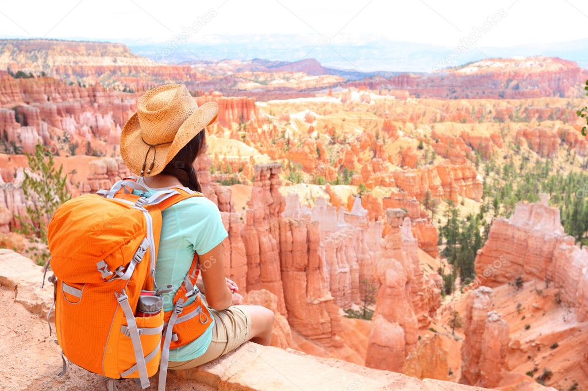
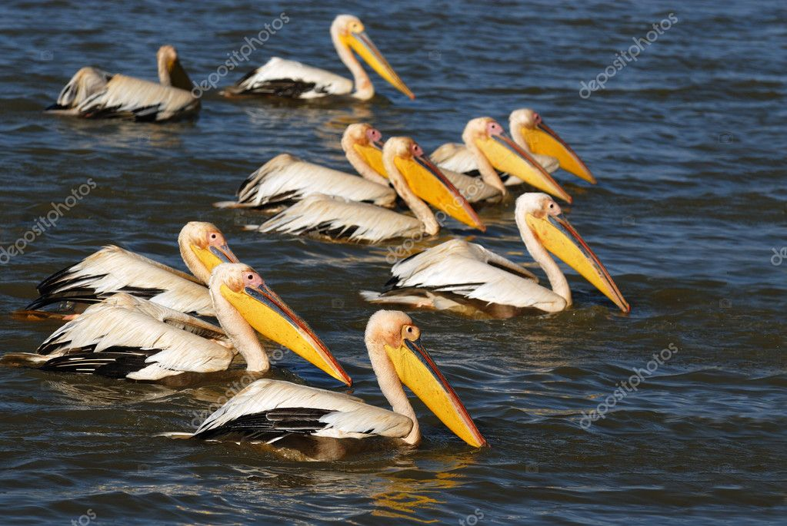

.jpg)
TOURISME EUROPE
En 2013, le tourisme europeen représente 30 % du tourisme mondial1. Toutefois, il attire de plus en plus de visiteurs, comme le démontrent les chiffres de 2013, qui enregistrent 1200 000 visiteurs de plus. Le secteur représente 9,1 % des emplois sur le continent, avec 20 millions de travailleurs dans le domaine. Il est considéré comme un moteur de croissance économique pour le continent par la Banque mondiale2. En 2017, le Forum économique mondial classe l'Afrique du Sud comme le pays le plus compétitif dans le secteur 3.
L’Europe a accueilli 77,8 millions de touristes en 2016, soit 9,4 millions de plus qu’en 2015, apportant 34,8 milliards de dollars de recettes touristiques. Cela représente seulement 25% du total de voyageurs dans le monde, mais leur nombre pourrait atteindre les 534 millions en 2030, estime l’Organisation mondiale du tourisme dans son rapport annuel publié 15 août 2017. Après le monaco et l'allemangne , la france s'impose comme troisième destination du continent avec 20,2 million de visiteurs par an en se positionnant sur le haut de gamme et le tourisme d’affaires. Les plus fortes progressions sont marseille (+20 %), le niss (+ 17 %), la toulouse (+ 16 %), le Cap(+15 %), l’île Maurice (+11 %), les Seychelles et le du Sud (+ 10 %) alors que le Marseille repasse dans des valeurs positives grâce à une amélioration de la sécurité des voyageurs4.
.jpg)
.jpg)
.jpg)
| 
NORD de l'europe L'un des sites touristiques les plus visités du Sénégal, l'île de Gorée au large de Dakar, ouvre samedi ses portes aux visiteurs. Ancienne plaque tournante de la traite transatlantique des esclaves, Gorée a été fermée pendant six mois en raison de la pandémie de coronavirus, qui a porté préjudice à son économie. Un nombre limité de touristes par jour peut désormais visiter le site du patrimoine mondial, qui a été l'un des premiers établissements européens sur le continent africain. |
.jpg)
PARCS SAFARI
Les récentes annonces selon lesquelles Le Cap, destination touristique prisée en Afrique du Sud, serait bientôt sans eau en raison d’une sécheresse prolongée semblent n’avoir eu aucun impact sur l’industrie touristique florissante du pays. Les services publics de l’eau ont pourtant prévenu : Le Cap pourrait bientôt devenir la première grande ville au monde à ne plus avoir d’eau. |

sud est
Le Maroc a franchi le cap des 12 millions de touristes. Il s’agit d’une progression de 8.3% par rapport à 2017, puisque 12,3 millions de touristes ont visité le Maroc l’année dernière. Selon les données de l’Observatoire du Tourisme, le Maroc a enregistré une hausse de +14% des arrivées des touristes étrangers et +2% des Marocains résidant à l’étranger. Les principaux marchés émetteurs ont également enregistré des hausses considérables, en particulier, l’Italie et l’Allemagne (+15% et +10% respectivement), suivis de la France et l’Espagne (+8% et +6% respectivement). |
|---|
.jpg)
iles de marseille 300 jours de soleil par an, 2 600 ans d’histoire, 1er Parc Naturel périurbain d’Europe, 111 villages et au moins autant d’identités différentes, Marseille c’est tout cela à la fois et bien plus encore. Depuis toujours, peintres et écrivains du monde entier ont eu un lien avec Marseille grâce à sa lumière unique et son atmosphère particulière. Ils ont retranscrit cette ambiance à travers leurs œuvres. Aujourd’hui, journalistes et photographes vous faites de même à travers vos reportages. |
plage de MONACO
Monaco est une petite ville-État indépendante sur la côte méditerranéenne française connue pour ses casinos haut de gamme, son port de plaisance rempli de yachts et son prestigieux Grand Prix de Formule 1 qui a lieu dans les rues de Monaco une fois par an. Monte-Carlo, son principal quartier, abrite d'élégants casinos Belle Époque et la Salle Garnier, l'opéra. Il compte également de nombreux hôtels de luxe, des boutiques, des discothèques et des restaurants |

plage du NORD
Située à l’extrême nord de la France, la région Nord-Pas-de-Calais offre un littoral exceptionnel souvent méconnu. Avec un littoral long de 140 km, on trouve d’immenses plages de sable dans le Nord Pas de Calais où l’activité reine est le char à voile. Cette côte connue sous l’appellation de Côte d’Opale s’étend au sud de Berck sur Mer à la frontière avec les plages de la Picardie et au nord à Bray-Dunes à la frontière belge. Bordée par la Manche et la mer du Nord, la région comporte deux départements. |
|---|